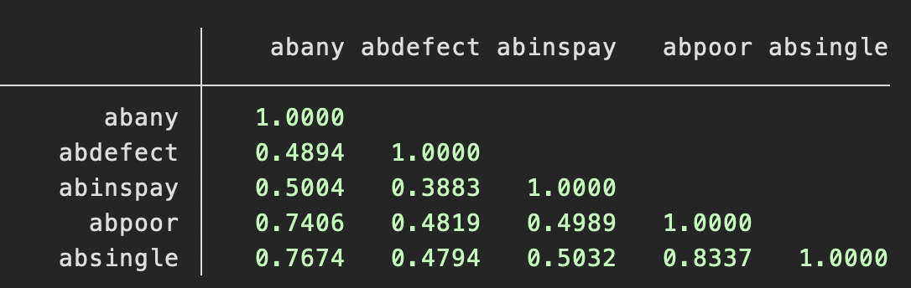
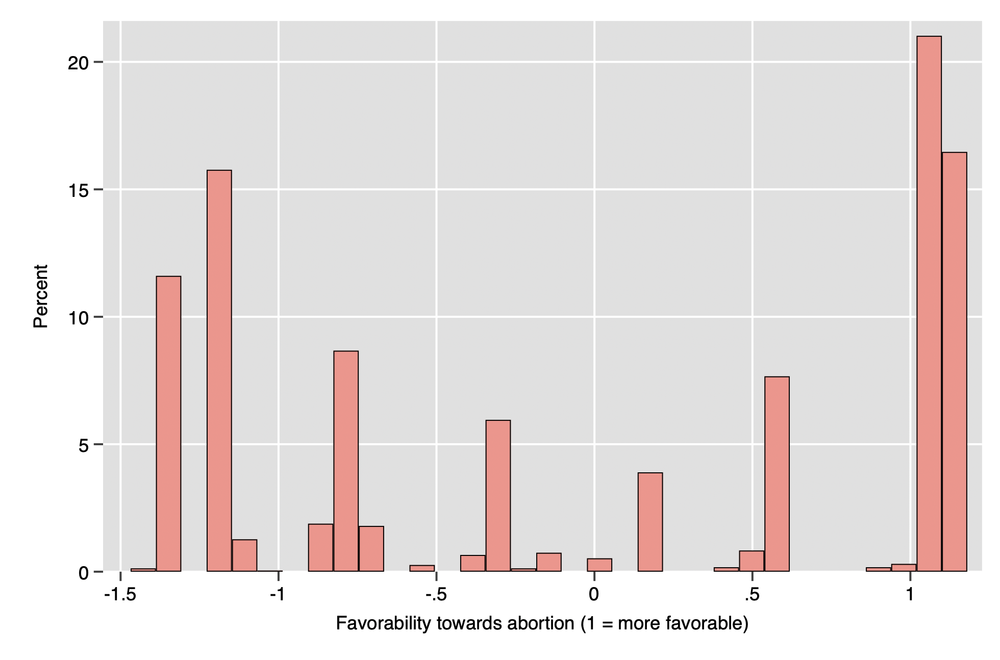

basic math for social sciences: measurement theory#
In this course, we spend some time discussing the measurement of variables. Although we often refer to “variables in the data-set”, you should keep in mind that these are in fact realizations of random variables, not the variable itself, which is the abstract notion of a property that varies across individuals. So, there is a difference between any such property and specific observations of it.
Sometimes, this difference is not hugely important. For example, someone’s money income is a well-defined concept; if we could assume away the problem of obtaining honest answers from respondents, the actual way to record observations of this variable for a given year is simple (dealing with inflation is harder). Less sociologically, correctly measuring someone’s height is also simple, as would be something like the measurement of the position of stars. While there is measurement error here—in fact, the astronomical example is the one that motivated Gauss’ early development of statistics—we have learned that taking a large enough sample, estimating the sampling variance with the sample variance (recall: \(\sigma^2_{\overline{Y}} = \frac{\sigma^2_Y}{n}\)) and constructing a confidence interval allows us to deal with random measurement error.[1]
Other times, we have the task of trying to measure some construct that we believe to be latent. For example, we might know that some variable really exists. Take, for example, someone’s fitness; most of us would say that this exists, but there are many reasons that we might distrust someone’s self-report of this quality—social desirability response bias means that we likely shouldn’t simply ask someone to evluate their own fitness, but it is not clear what single question we should ask them in order to measure it. Or, we might not even know for sure whether some underlying property exists; for example, the Meyers-Briggs personality tests classify people as introverts or extroverts, but it is unclear whether this classification is meaningful (some people, such as the author of this document, score differently at different times using the best available instruments, which suggests that this might not be a meaningful construct).
This can all get very complicated; at a high degree of psychometric sophistication, structural equation modeling is often necessary for what is known as factor analysis, which is a way of determining whether observed data are consistent with certain hypothesized latent constructs.
However, there are simpler methods available that in some ways get at the problem of measurement. I describe just one here: scale construction.
Scale construction is the simplest approach, and it draws yet again on the simple algebra of variances. A scale, in this context, simply means the sum of some items that we believe represent some underlying property. For example, we might believe that someone’s overall attitude towards abortion can be captured by their score on a battery of questions about abortion on the GSS.
We can then ask two questions about the scale: is it reliable? And is it valid? These two terms are fairly generic, and it would be more helpful to think about these as “internally trustworthy” and “externally trustworthy”, respectively. Here, externally trustworthy is harder to measure but easier to describe: it is how close our scale comes to describing reality. Our scale might capture a related concept but one which is systematically different from the true construct&mdash. Think of this like a bathroom scale generally being a consistent over-estimate of the weight of anyone who steps on it.
More sociologically, think about, say, a set of questions about police reform written by an advocacy group: those questions will generally induce people to systematically under- or over-state their interest in reform. This type of error is generally harder to catch because we by definition cannot observe the true, underlying construct in most cases, even if we have data on all members of our population (note that measurement error is thus totally separate from sampling error). One example of how this might work would be a case where we, say, define voting for a Democrat or a Republican as “left-wing voter” or “right-wing voter”. In this case, we could then see how people actually vote in some election to test our construct. But note that this only works when we define the “true” scale as voting patterns in a given election. Maybe this is not really what we usually mean by “left-(right-)wing voter”.
Reliability turns out to be easier to measure and it is also necessary for validity. We can think about reliability as the coherence of a measurement. It turns out that the variance in any scale which is composed of several variables, \(\frac{1}{n-1} \sum_{i=1}^n (y_i - \bar{y})^2\), is decomposable into the variability that is shared between its component variables and variability that is unique to each one. The proportion of variance which is shared[2] is one sort of “reliability coefficient”; this particular, simple one is known as Cronbach’s \(\alpha\) (“alpha”), after Cronbach (1943). A conventional, though arbitrary, cutoff for a reliable measure is \(\alpha\) = 0.8.
Below is an example drawn from the 2018 GSS. Details on the math are given in the appendix. It is worth mentioning a couple of caveats quickly, however. First, although scales are sometimes understood as a means of turning qualititative variables into quantitative ones, this is not strictly correct; scales require that the underlying variables have meaningful means and standard deviations. This is true for the special case of binary variables, but not strictly true for ordinal variables. Happily, nominal variables can be turned into sets of binary variables easily, although sometimes the resulting variables have meanings that are very specific—e.g., “are you somewhat dissatisfied with your doctor or not? are you mostly dissatisfied with your doctor or not?”. Second, standardizing the items involved if they are not already on a comparable scale is a good idea to make sure that no variable overpowers the others, unless it is intended that one variable should count more than the others because it is more precise, etc. Third, it is a good idea to ensure that correlations between variables are positive; if negative correlations are observed, one variable can simply be reverse-scored.
Coming to the example, below we see the correlation matrix for a set of variables on the 2018 General Social Survey (GSS). These represent, respectively, questions asking respondents whether a woman should be able to get an abortion… 1) for any reason at all, 2) if the child has a strong chance of a serious birth defect, 3) if she’ll use insurance to pay for it, 4) if she is poor, and 5) if she is unmarried. This class does not have adequate time to cover correlations, but you can interpret correlations easily. For the Pearson correlation coefficient in the sample, r, \( -1 \leq r \leq 1\), and the larger the absolute value of r, \(\lvert r\rvert\), the relationship between variables. In this case, the items generally have a close relationship, and the \(\alpha\) is a large 0.87.

What this tells us is that this variable captures something that all four questions about abortion have in common; it is a reliable measure of something, though we cannot be sure just what. However, reasonable guesses can be made, of course; it is not a scale measuring one’s interest in yo-yo competitions, for example. The score on this scale can be somewhat abstract; it is best intepreted relatively or turned into a standard score in its own right. The resulting variable is quantitative and can be used in any analysis which uses quantitative variables. Below is a histogram of the resulting composite variable.

appendix#
As demonstrated in earlier appendices, the general formula for the variance of a random variable Z which is the sum of random variables \(X_1, X_2, ... X_p\) is this: \(\sigma^2_Z = \sum_{j=1}^p \sigma^2_{X_j} + 2 \sum^p_{j>k} \sum^p_{k=1} \sigma^2_{X_j, X_k}\). While this formula seems complicated, it actually corresponds to a very nice picture. It turns out that this is just a way of describing the sum of the elements of the variance-covariance matrix for this set of variables! Here is a small example with p = 3, i.e. we have three variables. On the main diagonal are the variances for the individual variable; on the off-diagonals are the covariances. Although we won’t use these properties here, it is worth pointing out that you will probably notice that this matrix has some special properties: it is square (\(n_{rows} = n_{columns}\)) and symmetric (\(A_{ij} = A_{ji}\)).[3]
More to the point, you should notice that the summing up all items in the matrix yields the variance of the variable which simply sums up all of the \(X_j\). If we don’t have items on a comparable scale, we should standardize our measurements and ensure that all correlations between them are positive (possibly multiplying some variables by \(-1\)), in which case the variance is simply \(p + \sum^p_{j!=k}\sum^p_{k=1} r_{X_j, X_k}\) or \(p + 2\sum^p_{j>k}\sum^p_{k=1} r_{X_j, X_k}\). Note that the first equation manually counts all the off-diagonal elements; the second exploits the fact that this matrix is symmetric, so we just multiple the sum of the lower triangular elements by two. This is a good opportunity to practice your knowledge of summation notation. Let \(j\) represent the rows and \(k\) represent the columns[4]. The inside sum tells us to sum over all the columns; so, let’s start with column one. Then, the outer sum tells us to sum only over rows whose row number is greater than the column number. For example, that means only summing from row two onwards for column one and only “summing” row three for column two and doing nothing for column three (since we only have three rows). Note that that perfectly counts the bottom “triangle”.
Let’s now think more about what this represents, in simpler terms. The diagonal elements represent variation in the composite variable that is unique to the individual variables, and the off-diagonal elements represent covariance between them. So, if we add up the off-diagonal elements, we get the shared variance and we can divide this by the total to get the ratio of the total variance attributable to the relationships between the variables.
First, however, we must construct the measure of scale reliability by realizing that this is “not a fair fight”. There are \(k\) diagonal elements of the matrix, but \(k^2 - k = k(k-1)\) on the off-diagonals. This means that, no matter how strongly the items are correlated, the covariance can only ever be a certain share of the total variance; this share is generically \(\frac{k(k-1)}{k^2} = \frac{k-1}{k}\). To see this, following DeVellis (2003), you might consider a case where all items in a scale are standardized variables with perfect correlations. Then, you would have the following variance-covariance matrix. Note that the total variance of these three items is 9, but the sum of covariances is only 6; the covariances can only ever account for \(\frac{k(k-1)}{k^2} = \frac{2}{3}\) of the total variance.
So, in general, we divide the observed ratio of common to total variance by the largest possible value of this ratio, which is \(\frac{k-1}{k}\). Dividing by this fraction is equivalent to multiplying by its inverse, \(\frac{k}{k-1}\), giving us the following formula for the reliability coefficient of a variable Z which is the sum of variables \(X_1, X_2, ... X_p\):